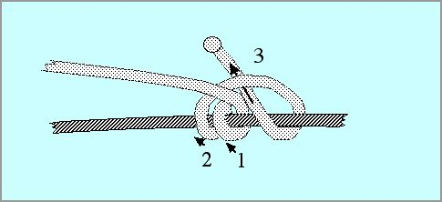
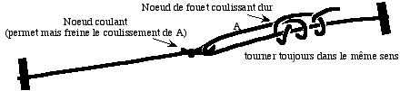

Un tel tendeur est utilisé, par exemple, pour cintrer les Rokkakus. J'en utilise aussi pas mal sur mes oiseaux pour règler des brides, un dièdre, tendre des haubans divers. Cela peut même être utile sur une bannière ou une tente. On peut bien sûr faire un noeud fixe, mais il faut le défaire et le refaire pour changer le réglage et cela, outre la complication, peut-être difficile sur une ficelle tendue.
On peut aussi, pour les Rokkakus, par exemple, prévoir une espèce de boutonnage qui permet de désaccoupler le tendeur pour le rangement. Mais cela ne règle pas le problème du réglage qui doit varier avec le vent et que, de toutes façons, on ne connaît pas toujours à la fabrication.

Le "Noeud de Fouet" est bien adapté à ces réglages : il coulisse assez facilement sur demande et n'est pas trop compliqué à faire. Pour le réaliser, si la traction vient de gauche, passer 2 fois le fil à gauche autour de la ligne, puis une fois dans l'anse formée, en tournant toujours dans le même sens. En le serrant, bien veiller à ce que les tours gardent la disposition du dessin. Au bout, je fais sur tous mes noeuds une boule avec un briquet. C'est fiable et je n'aime pas les bouts qui dépassent. Ainsi réalisé, le noeud tend à basculer sous la traction et tord en S la ligne support ce qui crée en grande partie la résistance.
Certains reprochent à ce noeud de coulisser tout seul dans certains cas ou à la longue. C'est vrai, je l'ai constaté, surtout sur des fils fins et lisses. Aussi une ficelle coupée au milieu et reliée par un noeud de fouet n'est pas sûre, et puis il y a un bout de ficelle qui pendrouille bêtement. Mais la commodité du noeud justifie qu'on recherche une solution l'utilisant.
Aussi, après divers essais, j'ai adopté le schéma que voici :

Il met en jeu deux "freinages" : celui du noeud coulant qui se resserre sur le fil, et celui du noeud de fouet lui-même. Pour coulisser volontairement, on agit successivement sur chacun des noeuds. Pour tendre, j'agis d'abord sur le cheminement à travers le noeud coulant. Puis, en maintenant la ficelle à cet endroit, je résorbe le mou à l'aide du noeud de fouet. Pour détendre, je fais l'inverse.
Les 2 freinages ne s'additionnent pas simplement, mais se multiplient en quelque sorte. Aussi je n'ai jamais eu de lâchage ou déréglage involontaire avec ce hauban à double freinage que je mets maintenant partout. Sa construction est relativement simple une fois qu'on possède le noeud de fouet. Un petit truc : on peut marquer avec un feutre le bout qui porte le noeud de fouet et qui doit coulisser, ça simplifie les manips sur le terrain au lieu de s'énerver à tirer sur un bout qui n'est pas le bon et cette saleté de noeud qui ne veut pas coulisser !